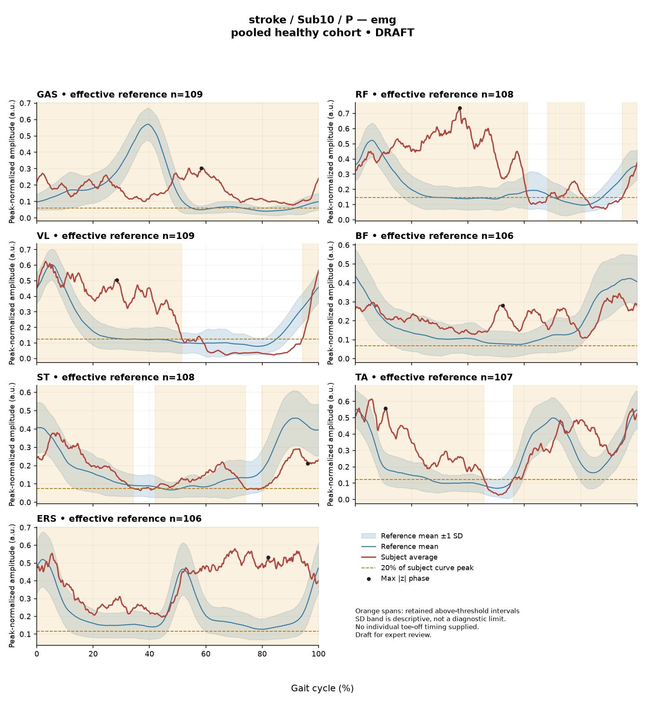

R2BDED0DA84CD2F11
rater3 / 150 of 150 / Case stroke_Sub10_P / Review row 151
Report: verbatim text
Text file for exact quotations# Gait Report Interpretation — Sub10_P **Version:** limited-evidence-v3.1-candidate **Scope:** Research interpretation of a supplied quantitative summary. This is not a diagnosis, not a functional assessment, and not a basis for treatment selection. --- ## 1. Objective Findings **Participant and side.** Sub10_P is a member of the stroke cohort; all data below are from the **paretic** side. The analysis cycle runs from one initial contact of the paretic limb (0%) to the next initial contact of the same limb (100%). These two endpoints are successive occurrences of the same event, not a single instant. **No intermediate gait event (including individual toe-off) and no phase boundary are supplied**, so all timing below is expressed as a percentage of the analysis cycle only. **Spatiotemporal values as supplied.** - Gait speed **0.24 m/s**, which falls in the "household ambulator (<0.4 m/s)" speed band. This label denotes a speed band only; it does not measure walking independence, safety, or real-world community mobility, and none of those were assessed here. - Cadence **72.2 steps/min**. - Step length symmetry index **+16.3%**, computed with the **successive-footfall** definition. With this dataset's sign convention (negative = shorter paretic step), the positive value indicates the **paretic step length exceeds the non-paretic** step length by this index. A second operational definition (instantaneous, both heels at one instant) exists and yields a different value in some subjects; only the successive-footfall value is supplied here, so the magnitude should not be treated as definition-independent. **Reference and comparability limits.** The deviation reference actually used for this subject is **138 pooled healthy subjects, 1001 phase points (source: main_cohort_excel)**. That cohort pools both body sides and all ages and is not age- or speed-matched to this participant. Critically, the healthy reference walking speeds span **0.80–1.79 m/s**; at **0.24 m/s this subject lies well below that floor, so no speed-matched healthy reference exists in this dataset**. Every comparison below is therefore a descriptive difference from an unmatched reference in which slow-walking effects and stroke-related control changes are inseparably conflated. No comparison here can establish a disease effect, a severity grade, or a clinical diagnosis, and no statistical significance is available or implied. **Channels available and not available.** Sagittal-plane kinematics are provided for ankle, knee, hip and pelvis; **coronal- and transverse-plane data are not included** in this input. Seven EMG envelope channels are provided (GAS, RF, VL, BF, ST, TA, ERS). Not supplied in this task: individual gait events/toe-off, matched muscle-specific normal timing references, stride-level (stride-to-stride) data, raw-signal quality checks, expert plots, non-paretic-side comparison data, and the release fields for age, sex, time post-stroke and stroke clinical scores. These are *not supplied here* — that is distinct from being documented as absent recordings in the source release. --- ## 2. EMG Envelope and Threshold Findings **How these numbers must be read.** All values come from **ensemble-averaged envelopes**. Normalization uses a shared maximum across the available strides for that participant, side and muscle before averaging; in the checked stroke release the denominator is participant-, side- and muscle-specific and is **not shared between sides**. Amplitudes are therefore **relative envelope values only** — they are not neural drive, force or strength, they cannot be ranked across muscles as stronger/weaker, and they cannot be compared to the other limb. Detected intervals and coverage are properties of the **averaged envelope** under the stated rule (above 20% of that same curve's own peak, minimum retained interval 3% of the cycle by sample count); they are not physiological onsets, offsets, contraction durations, or evidence of inactivity outside the intervals, and they do not establish that the same pattern occurred in every individual stride. An interval written with X > Y wraps across the 100%→0% cycle boundary. An onset of 0% is the analysis-window boundary. | Muscle | Retained interval(s) (% cycle) | Reported coverage | Peak norm. amp. | Max \|z\| vs reference (location) | |---|---|---|---|---| | GAS | 0%–100% | 100% | 0.31 | 10.6 above, at 58% | | RF | 68%–72%; 72%–81%; 95%–61% (wraps) | 79% | 0.74 | 8.2 above, at 37% | | VL | 94%–52% (wraps) | 59% | 0.62 | 5.7 above, at 28% | | BF | 0%–100% | 100% | 0.34 | 3.0 above, at 52% | | ST | 42%–74%; 80%–34% (wraps) | 89% | 0.38 | 1.5 **below**, at 96% | | TA | 56%–46% (wraps) | 90% | 0.61 | 3.8 above, at 11% | | ERS | 0%–100% | 100% | 0.58 | 6.5 above, at 82% | **Coverage and boundary continuity.** All seven mean envelopes are reported as above threshold across the cycle-defining boundary, i.e. the envelope does not drop below its own 20%-of-peak threshold at the 100%/0% transition at the mean-curve level. Coverage is high in every channel (59%–100%). For GAS, BF and ERS a single interval spanning 0%–100% with coverage displayed as 100% is reported; the displayed coverage is a rounded figure and the retention rule discards sub-3% segments, so this evidence supports "above threshold throughout the mean curve as reported" but does **not** by itself establish that no below-threshold segment of any length existed. Equally, the smaller coverage figures do not imply the muscle was inactive in the remaining percentages — sub-threshold envelope activity is not represented by these intervals. For RF, the three listed segments (two short segments at 68%–81% plus the wrapping 95%–61% segment) sum to the reported 79%; the small arithmetic gaps in ST and VL are consistent with rounding of the displayed endpoints. **Timing interpretation limits.** Because individual toe-off and matched muscle-specific timing references are not supplied, these percentages **cannot be assigned to stance, swing, loading response, mid-stance or pre-swing**, and a conventional 60% split must not be substituted. No interval may be described as normal, early, delayed or prolonged, and none may be mapped to a phase function such as clearance, push-off or weight acceptance. Anatomical actions may be named (e.g. TA as an ankle dorsiflexor, GAS as a plantarflexor, RF/VL as knee extensors, BF/ST as knee flexors/hip extensors, ERS as an erector spinae trunk extensor), but no such action is demonstrated by these curves. **Max |z| values.** Max |z| is an **extreme-value statistic** — the largest standardized difference from the pooled reference mean/SD across all 1001 phase points — not a single-observation z-score, and the conventional 2-SD rule does not apply. In this dataset every one of 109 healthy controls exceeds |z| = 2 on at least one muscle, and per-muscle healthy 95th percentiles for this statistic span **3.65 (ERS) to 4.61 (TA)**, higher still under leave-one-out. Against the per-muscle values that are actually supplied: **ERS 6.5 exceeds its own stated 95th percentile of 3.65**, and **TA 3.8 lies below its own stated 95th percentile of 4.61**. GAS (10.6), RF (8.2) and VL (5.7) exceed 4.61, the top of the stated per-muscle range, so they exceed any per-muscle 95th percentile within that span; BF (3.0) and ST (1.5) fall below 3.65, the bottom of that span, so they fall below any per-muscle 95th percentile within it. The individual 95th-percentile values for GAS, RF, VL, BF and ST are not supplied, so exact per-muscle positions cannot be stated for those channels. Each reported location marks where the standardized difference from the reference is largest — **not** necessarily where the envelope peaks and not a gait event. "Above reference" means above the phase-specific reference mean at that phase point (ST at 96% is below the phase-specific reference mean), not above or below a healthy percentile limit. Exceeding these reference-derived values does not establish abnormal physiology, and falling below them does not establish normal muscle function. **Co-contraction indices.** CCI here is the Falconer–Winter index over the **full continuous envelopes** (2 × common area / summed areas) for the **whole cycle**. It is not simultaneous-activation time, not muscular force, not phase-specific, and it can be non-zero even when detected bursts do not overlap, because sub-threshold activity contributes. - **TA vs GAS = 0.59**, which sits exactly at the **upper endpoint** of the supplied healthy interval (0.24–0.59; median 0.39) — i.e. at the boundary, above the supplied median. A value at a rounded endpoint does not permit classification of the hidden unrounded value as inside or outside. - **RF vs BF = 0.63**, inside the supplied healthy interval (0.48–0.83) and below the supplied median of 0.68. Lying inside the supplied interval does not establish physiologically normal co-activation or normal muscle function; lying at or outside it does not establish pathological co-activation, stiffness, impaired motor control, spasticity or any diagnosis. These values are specific to this normalization and envelope pipeline and must not be compared with CCI values or thresholds from other studies or algorithms. Averaged curves provide no information on stride-to-stride variability of co-activation. --- ## 3. Kinematic and Reference Comparisons All values are **sagittal plane only**. | Channel | ROM (deg) | Gait Variable Score | |---|---|---| | Ankle | 8.1 | 15.60 | | Knee | 35.1 | 16.70 | | Hip | 27.5 | 8.71 | | Pelvis | 0.7 | 3.27 | **Composite kinematic deviation score (GPS-like) = 12.34.** This is the RMS of the four supplied sagittal GVS values — it is a "GPS-like" composite, **not** the validated 9-variable GPS, and it is not interchangeable with published GPS values. Against the supplied composite reference (median 5.1; 95th percentile 10.7), 12.34 is above both. Those are **pooled calibration percentiles from an unmatched cohort**, not matched leave-one-out normal limits, so this position should be read as a summary distance from an unmatched reference rather than as an abnormality threshold crossing. **What GVS and the composite can and cannot say.** GVS and the GPS-like composite are RMS summary differences from the reference mean waveform across the cycle. They carry **no information about direction** (whether the curve is more flexed or more extended) and **no localization to any phase or event**. Within this subject's profile the knee (16.70) and ankle (15.60) GVS values are the largest and the pelvis (3.27) the smallest, but this ordering describes magnitude of difference from the unmatched reference only. **ROM.** ROM values are descriptive excursions of the mean sagittal curve. ROM alone does not establish a clinical restriction in the absence of an appropriate matched comparison, and no ROM reference values are supplied here. The ankle excursion of 8.1 deg and the pelvic sagittal excursion of 0.7 deg are small in absolute terms; because no matched reference, no marker/model documentation and no raw-signal or tracking quality information are supplied, it cannot be determined from this input whether such values reflect movement pattern, measurement/modelling factors, or both. Note again that speed lies below the reference cohort's 0.80 m/s floor, so all kinematic deviations here conflate very slow walking with stroke-related changes and cannot be attributed wholly to stroke pathology. --- ## 4. Questions for Further Clinical Assessment These are open questions raised by the limits of the supplied summary. None presupposes that the mechanism or measurement issue in question has been observed, and none implies a management recommendation. 1. **Gait events.** Can individual gait events (particularly paretic toe-off) and matched muscle-specific timing references be retrieved from the release for this subject, so that envelope intervals could be related to stance/swing subdivisions rather than to cycle percentages alone? 2. **Slow-speed reference.** Is any healthy or clinical reference dataset available at or near 0.24 m/s? Without one, the reported deviations cannot be separated into speed-related and stroke-related components. 3. **Pelvic and ankle channels.** Would review of marker placement, model definitions and tracking quality clarify whether the 0.7 deg pelvic and 8.1 deg ankle sagittal excursions reflect the movement pattern, a measurement or modelling factor, or a combination? 4. **Envelope/threshold behaviour.** Would inspection of raw signals, baseline offset, filter settings and envelope shape help determine whether the uniformly high above-threshold coverage across all seven channels (59%–100%, all continuous across the cycle boundary) reflects the underlying signal, the relative 20%-of-own-peak threshold applied to a low-peak curve, baseline noise or crosstalk, or some combination? The very low peak amplitudes in GAS (0.31) and BF (0.34) relative to their own maxima are worth considering in this context. 5. **Stride-level data.** Are per-stride envelopes and stride counts available? The supplied averaged curves cannot address stride-to-stride consistency, and a mean-envelope pattern does not imply that each stride matched it. 6. **Contralateral and off-plane data.** Are non-paretic-side EMG and kinematics, and coronal/transverse-plane kinematics, available? Note that with side-specific EMG normalization denominators, cross-side amplitude comparison would not be valid without re-normalization. 7. **Clinical context.** Are the release fields for age, sex, time post-stroke and stroke clinical scores populated for this participant, and were an orthosis, walking aid, or handrail/treadmill support used during collection? Any of these would materially affect how the spatiotemporal and deviation values should be read. 8. **Symmetry definition.** Would recomputing step length symmetry under the instantaneous definition change the magnitude or direction of the +16.3% value for this subject? 9. **Reference construction.** For any future comparison, can leave-one-out, age-stratified or speed-stratified limits be generated in place of the pooled 138-subject percentiles used here? **Overall summary statement.** This report describes, for the paretic side of one stroke-cohort participant, mean-envelope threshold coverage and relative amplitudes, two whole-cycle co-contraction indices, and sagittal kinematic summary differences from an unmatched pooled healthy reference at a walking speed below that reference's range. The findings quantify differences from that reference; they do not establish abnormal physiology, a mechanism, a severity level, or a clinical diagnosis, and they are not used here to select or direct any intervention.
Coverage rows
| Excel row | ID | Required content | Components |
|---|---|---|---|
| 860 | R019 | Describe walking speed 0.24 m/s and that it is below the stated 0.80 m/s reference floor; no reference at this speed is supplied. | AND: displayed speed and that it lies below the 0.80 m/s reference floor, so no speed-supported healthy reference exists in this dataset. Optional: cadence, speed-band label (not a functional claim). One sentence may also serve the comparability half of G03. |
| 861 | R020 | Identify knee AND ankle as the principal sagittal GVS differences, without requiring their exact ordering. Exact GVS values are optional; identify the findings as reference-relative sagittal summary differences. | AND: knee AND ankle, no order. Stating which joint is larger is optional; asserting the reverse order is an error. Exact GVS values are optional; no waveform direction, phase or restriction is required. Ankle ROM 8.1 may be reported as a measurement only. |
| 862 | R021 | Describe GAS envelope above its phase-specific reference mean at approximately 58% of the analysis cycle (displayed max |z| 10.6). Within each route, muscle identity AND mean-relative direction AND approximate cycle location are required. Exact max-|z| repetition is optional. | Required for each route: muscle identity AND direction relative to the phase-specific reference mean AND approximate cycle location. Optional: exact max |z| value, comparison with the supplied endpoint span (descriptive only). Prohibited: percentile classification, gait phase, physiological onset, severity. |
| 863 | R022 | Describe RF envelope above its phase-specific reference mean at approximately 37% of the analysis cycle (displayed max |z| 8.2). Within each route, muscle identity AND mean-relative direction AND approximate cycle location are required. Exact max-|z| repetition is optional. | Required for each route: muscle identity AND direction relative to the phase-specific reference mean AND approximate cycle location. Optional: exact max |z| value, comparison with the supplied endpoint span (descriptive only). Prohibited: percentile classification, gait phase, physiological onset, severity. |
| 864 | R024 | Describe the supplied successive-footfall step-length index 16.3% and its meaning: the paretic step is longer. | AND: displayed index and the direction supported by its sign. Optional: formula, definition wording. Acceptable phrasing for small displayed values: "a small difference with the paretic step slightly shorter/longer" (not a cutoff). Prohibited: restating the index as a percentage shortening (E01), severity grades, whole-gait symmetry generalization (E07 issue, not an omission). |
| 865 | G03 | Express a meaningful limitation of reference comparability AND why the comparison cannot establish disease effects or clinical diagnosis; for controls it cannot establish disease or overall normality. One statement may also support a case requirement. | AND: comparability and inference limitations |
Exact system input
Saved fileDraft a research gait-report interpretation for a physical therapist or physiatrist using only the supplied quantitative summary. This is a limited-evidence interpretation task, not diagnosis or treatment selection. Rules: - Describe the participant's actual group and side, available findings, and missing channels accurately. Healthy-group membership does not prove normal physiology; deviations from an empirical reference do not by themselves establish disease. - Treat detected EMG intervals and coverage as properties of an averaged envelope under the stated threshold and duration rule. Do not convert them into physiological onset, offset, duration, continuous contraction, or inactivity outside the intervals. You may describe reported coverage, retained intervals and boundary continuity at the mean-envelope level. Do not infer the same pattern in every individual stride. Say no below-threshold segment only when the supplied evidence establishes that; a rounded coverage value or no retained interval alone does not establish it. - Individual toe-off and matched muscle-specific timing references are not supplied in this task. Use percentages of the analysis cycle. When the input explicitly identifies an initial-contact boundary, you may name that boundary or describe numerical proximity to it. Do not assign stance/swing, loading response, pre-swing, mid-stance or another event to a percentage, or substitute a conventional 60% split. Anatomical muscle actions may be named, but do not map an interval to a gait-phase function such as clearance, push-off or weight acceptance. Do not characterize timing as normal, early, delayed or prolonged without the required evidence. - Respect the supplied normalization method. Relative envelope amplitude is not strength or force, and average curves do not establish stride-to-stride variability. - Report CCI as a whole-cycle overlap index of normalized EMG envelopes. You may compare it with the supplied empirical interval or a supplied median, including proximity to an endpoint. Do not invent an unavailable median. Being within that interval does not establish physiologically normal co-activation or normal muscle function; being outside it does not establish pathological co-activation, stiffness, impaired control or a diagnosis. CCI is not simultaneous activation time, muscular force or a phase-specific result. It depends on normalization and envelope methods; do not transfer values or thresholds from other studies or algorithms. - Describe GVS and GPS-like as summary differences from the stated reference. Neither localizes waveform direction or phase; ROM alone does not establish a clinical restriction without an appropriate comparison. Do not treat pooled calibration percentiles as matched leave-one-out normal limits. - Where using a reference comparison, convey both limited comparability and the inability to establish a disease effect or clinical diagnosis from that comparison. One clear explanation per report is enough; age and speed need not be recited as separate checklist words. A speed inside an overall range does not prove that an appropriate matched reference exists. Apply these limits to controls as well. - The location of maximum |z| is the largest standardized difference from the reference, not necessarily the time of peak envelope amplitude or a gait event. Above/below reference in an EMG row means relative to the phase-specific reference mean at that location, not relative to a healthy percentile limit. - Preserve numerical direction and the displayed precision. Do not invent values, clinical severity grades, statistical significance, or unavailable reference values. Descriptive comparisons with supplied values remain allowed. Near-boundary rounded values do not justify classifying hidden unrounded values. - Clinical follow-up questions may ask whether a mechanism or measurement issue exists; do not presuppose it has already been observed. Do not recommend treatment. If EMG is unavailable, section 2 may simply state that envelope timing, amplitude and CCI cannot be assessed. Reference-only plots do not provide patient EMG. Use exactly these four sections: 1. Objective Findings 2. EMG Envelope and Threshold Findings 3. Kinematic and Reference Comparisons 4. Questions for Further Clinical Assessment
Exact case input
Saved fileCandidate interpretation version: limited-evidence-v3.1-candidate
Draft the four-section report using only this subject's supplied evidence.
Metric definitions (read before interpreting any number below):
- All joint angles and ROM values are SAGITTAL PLANE only. Coronal/transverse data are not included.
- The released EMG curves are ensemble-averaged envelopes. For each participant and recorded muscle, normalization uses a shared maximum across the available strides before averaging; individual strides are not independently rescaled to their own peaks. This pipeline uses the released mean curves without further amplitude normalization. In the checked stroke release, the denominator is participant-, side-, and muscle-specific; it is not shared between sides. The local array audit verified 614 evaluable combinations, not all 700; 86 lacked valid nonzero paired samples. Amplitudes are relative envelope values, not absolute neural activation, force, or strength. Do not rank muscles as stronger or weaker from these amplitudes, or infer stride-to-stride variability from an average curve.
- Above-threshold intervals are the regions where the averaged envelope exceeds 20% of that curve's own peak, minimum retained interval 3% of the cycle (by sample count). An interval written as (X%-Y%) with X > Y wraps across the 100%->0% cycle boundary (envelope remains above threshold across the cycle-defining event). An onset of 0% is the analysis-window boundary, not necessarily a physiological onset. "No interval detected" means no region met the threshold + duration criteria; it does NOT mean the muscle is inactive or non-functional.
- CCI is the Falconer-Winter co-contraction index computed on the full continuous envelopes (2*common area / summed areas), so it can be non-zero even when the DETECTED burst intervals of the pair do not overlap (sub-threshold activity contributes).
- The composite kinematic deviation score is the RMS of the per-joint Gait Variable Scores over the sagittal channels provided ("GPS-like", not the validated 9-variable GPS).
- Step length symmetry index: 200*(paretic - non-paretic)/(paretic + non-paretic), in %. NEGATIVE means the paretic-side step is SHORTER. Two operational step-length definitions exist (successive-footfall: each heel's position at its own initial contact; instantaneous: both heels at the same instant) and give different values for some subjects -- the definition actually used is stated next to the symmetry value.
- "Max |z| deviation" is the LARGEST absolute z-score across all 1001 phase points of the cycle, comparing this curve to the healthy-cohort mean/SD at each phase. This is an extreme-value statistic, NOT a single-observation z-score: in this dataset every one of 109 healthy controls exceeds |z| = 2 on at least one muscle, and per-muscle healthy 95th percentiles for this statistic run 3.65 (ERS) to 4.61 (TA) -- higher still under leave-one-out. Do not label a value abnormal by the conventional 2-SD rule; use the healthy reference range given per muscle where provided.
- Healthy-cohort CCI reference (this dataset): RF-vs-BF median 0.68 (2.5th-97.5th pct 0.48-0.83); TA-vs-GAS median 0.39 (0.24-0.59). Composite score reference: median 5.1, 95th percentile 10.7.
- COHORT BACKGROUND (calibration context, not necessarily the exact reference used for this subject -- the actual reference composition is stated in a dedicated line with the subject data below): the full healthy cohort is 138 subjects for kinematics, effective n = 106-109 per muscle for EMG (29 controls have no usable EMG; completeness varies by age), pooling both body sides and all ages; it is not age- or speed-matched to this subject. A leave-one-out run uses one subject fewer than these counts.
- SPEED SUPPORT LIMIT (applies to most stroke subjects in this dataset): the healthy reference cohort's self-selected walking speeds span 0.80-1.79 m/s. If this subject's gait speed is below 0.80 m/s, NO speed-matched healthy reference exists in this dataset -- 41 of the 50 stroke subjects are below that floor. Deviations from the reference then conflate slow-walking effects with stroke-specific control changes, and the two cannot be separated from these data. Describe deviations from the reference as such; do not attribute them wholly to stroke pathology.
- Additional source fields are outside this input. Age, sex and gait events may be available in the release; time post-stroke, stroke clinical scores and a non-paretic-side designation apply only to the stroke cohort, as applicable. Do not claim every listed field exists for every participant. Distinguish not supplied, not applicable and documented absent recordings.
The released paretic-side cycle runs from initial contact of that limb at 0% to its next initial contact at 100%. The cycle boundary may be called initial contact; the endpoints are successive occurrences, not one instant. No intermediate event or phase boundary is supplied.
Model-visible information boundary: the summary contains mean-curve metrics and algorithm-detected intervals, not individual toe-off, matched normal muscle timing, stride-level variability, raw-signal quality checks, or expert plots. Information not supplied here must not be described as absent from the source dataset. Gait-cycle percentages alone do not identify gait phases.
Subject: Sub10_P (group: stroke, affected side: paretic)
Gait speed: 0.24 m/s (household ambulator (<0.4 m/s)) [The ambulation label denotes a speed band only, not measured walking independence, safety or real-world community mobility.]
Cadence: 72.2 steps/min
Step length symmetry index: 16.3% (step-length definition: successive_footfall)
Composite kinematic deviation score (GPS-like): 12.34
Deviation reference actually used for this subject: 138 healthy subjects (pooled), 1001 phase points, source: main_cohort_excel.
EMG envelope findings:
- GAS: above-threshold interval(s) 0%-100%, 100% of cycle above threshold, above threshold across cycle boundary, peak normalized amplitude 0.31, max |z| vs healthy reference: 10.6 (above reference, at 58% of cycle)
- RF: above-threshold interval(s) 68%-72%; 72%-81%; 95%-61% (wraps cycle boundary), 79% of cycle above threshold, above threshold across cycle boundary, peak normalized amplitude 0.74, max |z| vs healthy reference: 8.2 (above reference, at 37% of cycle)
- VL: above-threshold interval(s) 94%-52% (wraps cycle boundary), 59% of cycle above threshold, above threshold across cycle boundary, peak normalized amplitude 0.62, max |z| vs healthy reference: 5.7 (above reference, at 28% of cycle)
- BF: above-threshold interval(s) 0%-100%, 100% of cycle above threshold, above threshold across cycle boundary, peak normalized amplitude 0.34, max |z| vs healthy reference: 3.0 (above reference, at 52% of cycle)
- ST: above-threshold interval(s) 42%-74%; 80%-34% (wraps cycle boundary), 89% of cycle above threshold, above threshold across cycle boundary, peak normalized amplitude 0.38, max |z| vs healthy reference: 1.5 (below reference, at 96% of cycle)
- TA: above-threshold interval(s) 56%-46% (wraps cycle boundary), 90% of cycle above threshold, above threshold across cycle boundary, peak normalized amplitude 0.61, max |z| vs healthy reference: 3.8 (above reference, at 11% of cycle)
- ERS: above-threshold interval(s) 0%-100%, 100% of cycle above threshold, above threshold across cycle boundary, peak normalized amplitude 0.58, max |z| vs healthy reference: 6.5 (above reference, at 82% of cycle)
Co-contraction indices:
- TA_vs_GAS: CCI = 0.59
- RF_vs_BF: CCI = 0.63
Joint kinematic findings (sagittal plane):
- AnkleAngles: range of motion 8.1 deg, Gait Variable Score 15.60
- KneeAngles: range of motion 35.1 deg, Gait Variable Score 16.70
- HipAngles: range of motion 27.5 deg, Gait Variable Score 8.71
- PelvisAngles: range of motion 0.7 deg, Gait Variable Score 3.27Reference card
Saved file# Reference context: stroke/Sub10_P Mean/SD reference: 138 controls; method pooled; exclusions: []. Effective reference counts: GAS=109, RF=108, VL=109, BF=106, ST=108, TA=107, ERS=106, AnkleAngles=138, KneeAngles=138, HipAngles=138, PelvisAngles=138. The exact system and user input files define what the model receives. The EMG and kinematic plots are supplementary expert evidence, not model inputs. The plotted mean plus/minus one SD is descriptive, not a clinical normal band. Negative lower EMG bands can result from mean minus SD; they do not imply negative recorded EMG. The max-|z| p95 span in the input is pooled calibration context. Complete muscle-specific LOO thresholds are not supplied; an appropriately indeterminate classification is allowed. Controls are excluded from their own mean/SD reference, but cohort-level calibration has prior reference-data reuse. It is not an independent matched clinical limit. GPS-like is a four-channel sagittal composite, not the validated nine-variable GPS. The pooled median/p95 background is not a matched LOO normality boundary. CCI uses continuous normalized envelopes over the whole analysis cycle. An empirical interval comparison does not establish normal muscle function. Threshold intervals and rounded coverage describe the averaged envelope. Rounded 100% coverage and one interval do not prove absence of short below-threshold gaps. Use the group-specific cycle and normalization provenance in the actual input. No individual intermediate gait events or matched normal muscle timing are supplied. Administrative age and published bilateral speed are not added to this input. Expert-visible plots do not justify requiring unseen direction, phase or morphology. For a new-case requirement, cite exact input evidence. Select clinically useful descriptive content without inferring a diagnosis or severity from rank alone.
Expert reference curves
Only text inputs were supplied to the model. Do not require curve-only findings.
EMG

Kinematics